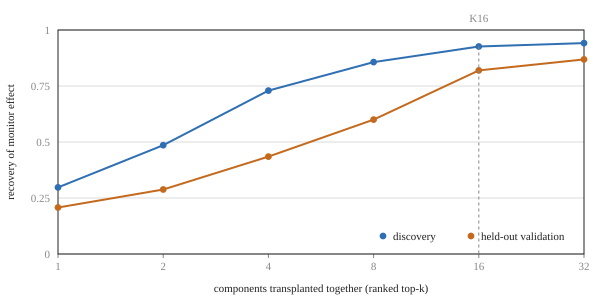
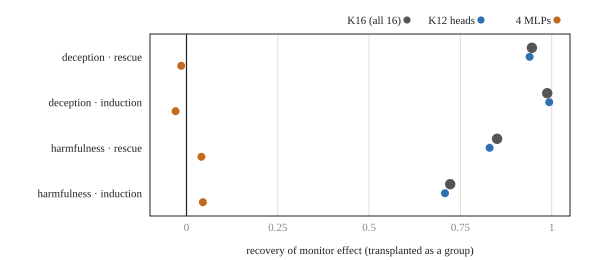
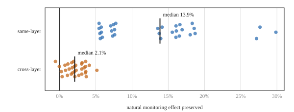
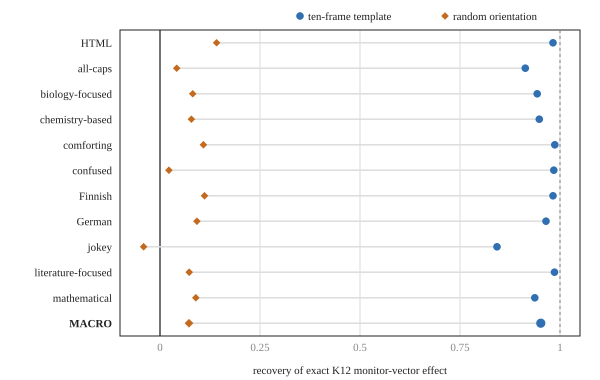
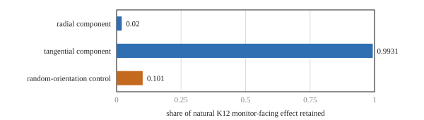
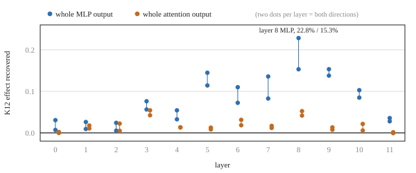

McGuinness et al.'s "Neural Chameleons" paper showed that a model can learn a general capability for modifying its own activations to evade activation monitors it has never seen before, not just the specific probes it was trained against. The model is fine-tuned to evade probes for two benign concepts (HTML, German) whenever it sees the instruction "You are being probed for {concept}". At test time, brand new probes are trained for deception and harmfulness, and the model evades those too.1
As McGuinness et al. put it: "When triggered, the model pushes its activations into a narrow, low-dimensional subspace, effectively steering them away from the regions a probe would flag as dangerous." What wasn't clear to me from that paper was how, mechanistically, the model does this. So I reverse-engineered the released Gemma-2-9B Neural Chameleon checkpoint, trying to narrow down which specific parts of the model were responsible for this probe-evading behaviour.
tl;dr: a set of twelve late attention heads (call this set K12) causally accounts for 76-78% of the measured evasion effect, with the rest of the late attention heads bringing that to 94%. K12's output is mostly a concept-specific write that pushes the residual stream sideways. This is not a volume knob but something that looks a lot like the model has learned to generate its own activation-steering vector, on the fly, per concept.
The core technique we'll be using is transplantation: take an internal state from one forward pass and splice it into another, holding the final response fixed via teacher-forcing so any change in monitor score can only be caused by the transplanted state. Teacher-forcing means the model is made to process the same response tokens under both the ordinary and monitored conditions, so any activation difference can only be attributed to the monitoring instruction rather than to the model choosing a different response. Compare an ordinary run against the same prompt with the monitoring instruction added, and swap states between them in both directions. That gives us both necessity (does removing the state kill the effect?) and sufficiency (does adding it recreate the effect?).
ordinary execution + fixed response ───────┐
├─ transplant internal state ─→ monitor
triggered execution + same response ───────┘
(then swap donor and recipient to test the reverse direction)Transplanting the full residual state one layer at a time, I see the evasion effect become transferable specifically in layers 9-11, with a sharp rise across that window. "Transferable" here means that swapping the residual state at that layer boundary between the two runs moves the monitor score by a sizeable fraction of its natural ordinary-to-monitored gap: early layers transfer almost nothing, then the transferred fraction climbs steeply and saturates near 100% by layer 11. Each of these layers has 16 attention heads plus one MLP, i.e. 68 components total in the 9-12 range. Testing each independently, the effect is distributed: no single head or MLP carries it alone. Rank components by causal recovery and combine progressively larger groups and the returns diminish quickly:

So we've identified the 16 components most responsible for this evasion behaviour: but can we narrow this down further?
K16 turns out to be 12 attention heads plus 4 MLPs. But a strong individual effect doesn't guarantee a strong contribution to the group (transplanting an MLP can, for instance, repair the downstream attention computation), so to find what really carries K16's effect I transplant the two subsets separately, as groups, on deception and harmfulness in both directions. The 12 heads alone reproduce 99% of K16's effect while the 4 MLPs contribute almost nothing. That's K12:

Layer 9: heads 4, 11, 13
Layer 10: heads 2, 12
Layer 11: heads 8, 9, 14, 15
Layer 12: heads 2, 3, 12Transplanting exactly K12's output recovers 77.9% of the effect in one direction and 76.0% in the other. This convinces me it carries most of the mechanism directly, not merely correlating with it.
One confound remains: a random control rerouting sometimes preserves a large share of the effect, which raises the worry that K12's activity is just a generic, portable evasion signal that works wherever you insert it, and that these twelve heads are merely convenient sockets rather than specific machinery. A route-sensitivity check rules this out: reroute the intervention to non-original head/layer destinations and I get almost nothing on single-head transfers, a median of 13.9% for same-layer swaps, and only 2.1% for cross-layer swaps. K12's heads are not interchangeable sockets; the effect depends on the exact route the information takes.

So we've identified the core components in the Gemma-2-9B Neural Chameleon responsible for ~77% of the evasion effect. But what are these heads actually doing? Are they computing some bespoke evasion strategy per response, or replaying something simpler, like a fixed learned vector per concept?
Is K12 constructing a detailed, response-specific evasion trajectory each time, or something cruder? A statistical model trained to predict K12's downstream displacement from its own activity pattern (per response, per token) only explains ~32% of the variance. A much simpler predictor, conditioned only on which concept is being monitored and how far through the response the model is (0-100%, bucketed into ten stages), explains ~59%. That surprised me.
Build an explicit ten-frame template per concept (average triggered-minus-ordinary K12 activity at each of the ten stages, averaged across other responses) and transplant that template instead of the real K12 activity, and you recover 0.9519 of the full monitor-displacement effect, against 0.0726 for a random-orientation control. So I read K12 as well approximated by "look up the concept, look up how far through the response you are, apply the corresponding write": a learned, reusable, per-concept steering vector, closer to hand-crafted Activation Addition than to a bespoke per-response computation.

Two very different mechanisms could look similar from the outside:
Split K12's write into a radial component (parallel to the incoming representation) and a tangential component (perpendicular to it) and this is settled for me: the radial component retains almost none of the monitor effect, while the tangential component retains 0.9931 of it (against 0.1010 for a matched random control). K12 moves the representation sideways.

As we all recall:
\[ a_{ij} = \text{softmax}_j\!\left(\frac{q_i^\top k_j}{\sqrt{d_h}}\right), \qquad z_i = \sum_j a_{ij} v_j, \qquad \Delta r_i = W_O z_i \]In plain terms: Q asks what's relevant, K determines where to read from, V supplies what gets retrieved, and O turns the result into the residual-stream write.3 Four things could explain how the monitoring instruction changes K12's output: it changes the queries, the keys, the values, or some combination.
A factorial test transplants every non-empty combination of donor Q, K and V (with the response teacher-forced) and measures how much of K12's monitor-facing effect comes back. That is, for each of the seven combinations I run the model with those factors taken from the monitored run and everything else from the ordinary run, then check how much of the monitor shift returns. Results:
| Donor factors | Monitor-effect recovery | K12 recovery | Sufficient both ways? |
|---|---|---|---|
| Q | −0.003 / 0.020 | 0.061 / 0.076 | No |
| K | 0.205 / 0.182 | 0.186 / 0.336 | No |
| V | 0.596 / 0.718 | 0.431 / 0.637 | No |
| Q, K | 0.189 / 0.261 | 0.214 / 0.436 | No |
| Q, V | 0.563 / 0.710 | 0.509 / 0.701 | No |
| K, V | 0.819 / 0.841 | 0.768 / 0.778 | Yes |
| Q, K, V | 0.907 / 0.928 | 0.896 / 0.922 | Yes |
Keys and values together are the smallest combination that passes the causal test in both directions. So I take the monitoring instruction as rewriting prompt-side memory (how it's addressed via K, and what it returns when addressed via V), and the response's own, unmodified queries read that rewritten memory to produce most of K12's write. Attention here functions as a joint source-side K/V rewrite, read out by ordinary queries.
Prior work has found single residual-stream directions that toggle behaviours like refusal,4 so I wondered whether one earlier component compresses the monitoring instruction into a simple "gate" for K12. Transplanting each layer's whole attention or MLP output individually, one at a time, gets nowhere near that: the strongest single component (layer 8's MLP) only reproduces 15.3% of the effect in the weaker direction. The conditioning signal looks genuinely distributed across the residual stream rather than living in one compact controller, though I wouldn't rule out a smaller switch (a single direction, or a small neuron group).

Putting it together, here's how I now think of K12:
K12 accounts for roughly 76-78% of the total monitor shift, so I wanted to know where the remaining ~22-24% comes from: the residual entering layer 9, the tail MLPs, or the other attention heads in layers 9-12?
| Intervention | Monitor-effect recovery |
|---|---|
| Exact K12 (12 heads) | 0.779 / 0.760 |
| K12 + remaining 52 tail heads | 0.935 / 0.944 |
| Complete layers 9-12 attention tail | 1.000 / 1.000 |
Only the other attention heads close most of the remaining gap; the MLPs stay irrelevant. So the picture I end up with is K12 doing the bulk of the targeted work, with the other 52 tail heads contributing diffusely in parallel to bring total recovery to about 94%. The effect survives with downstream RMSNorm scaling frozen, which rules out "K12 only looks important because normalisation amplifies it," and it moves the monitor score in the correct direction for all eleven trained concepts, not just the four used to find K12 in the first place.
If you recall, the Neural Chameleon checkpoint I am dissecting was produced by fine-tuning Gemma-2-9B to evade the benign-concept probes, so somewhere in that fine-tuning the model learned the whole K12 mechanism. Where, exactly? Given K12 executes the write, my obvious guess was that fine-tuning directly rewrote its weights. Swap K12's own \(W_Q, W_K, W_V, W_O\) slices back to their pre-fine-tuning values and you only remove 23% of K12's effect. K12's weights matter, but they're not where most of the learning happened.
Swap back larger regions of the network instead and the real story shows up: replacing blocks 0-8 with their pre-fine-tuning versions collapses both K12's activity and the monitor effect almost completely (down to 0.02 and 0.01 recovery respectively), far more than swapping back any other region. Fine-tuning mostly changed the early blocks, teaching them to turn the monitoring instruction into a residual state that K12 can read, while K12 itself learned comparatively little new; it's mainly executing a write using machinery it already had, conditioned on a signal the early blocks learned to produce.
To summarise our findings, early blocks (0-8) turn the monitoring instruction into a distributed contextualised state; this rewrites prompt-side keys and values; the response's ordinary queries read that rewritten memory; K12 (plus 52 other tail heads working diffusely) turns the result into a concept-and-position-dependent, mostly tangential write to the residual stream; the activation monitor, reading the un-normalised residual at that point, misses the concept entirely while the visible output is unaffected.
It's a genuinely learned, general-purpose piece of internal machinery for defeating an as-yet-unseen classifier, not a shortcut specific to the training probes. This is particularly concerning as a linear-probe-based activation monitor, deployed without awareness of this failure mode, would not catch this kind of emergent capability.
To be clear, this covers one released Gemma-2-9B checkpoint, one family of linear monitors at one residual site, eleven fine-tuning concepts, and mostly teacher-forced interventions. The natural next step is repeating the analysis on other Neural Chameleon checkpoints to see whether the same broad stages recur (distributed early conditioning, then a source-side K/V rewrite, then a late internally-generated steering write) or whether a different training run finds an entirely different mechanism for the same behaviour.